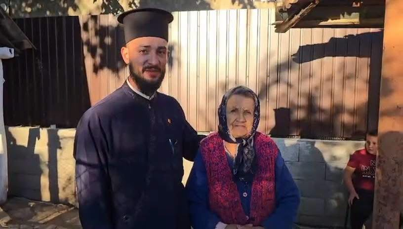
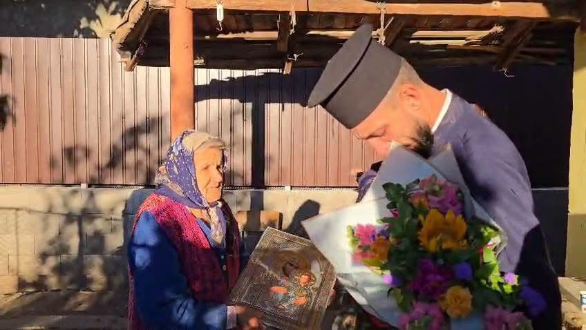
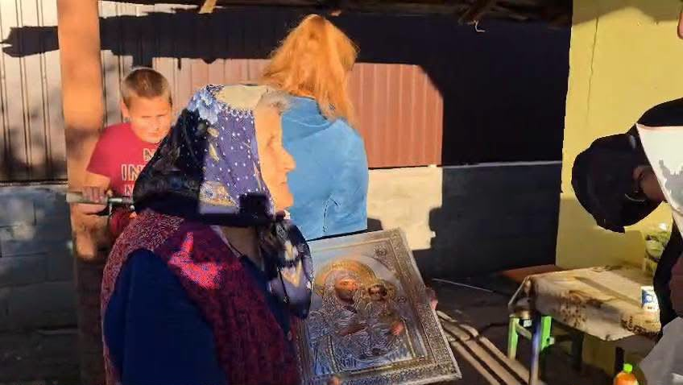
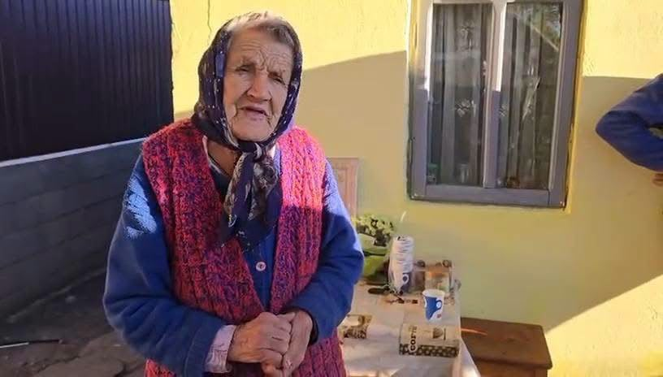
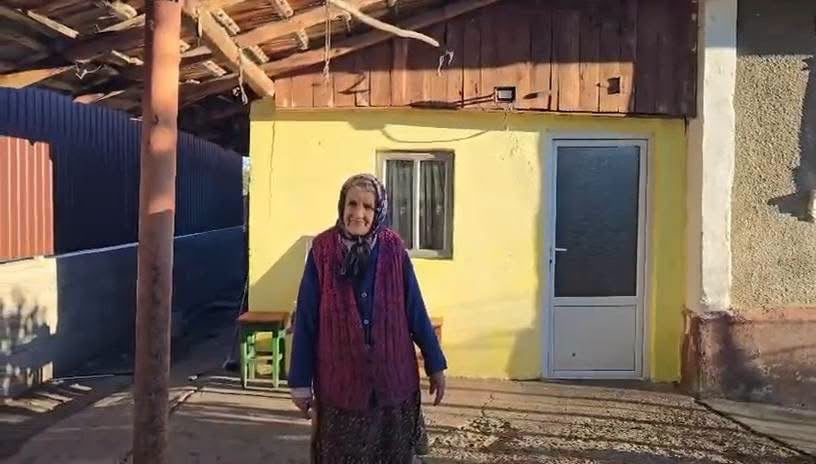
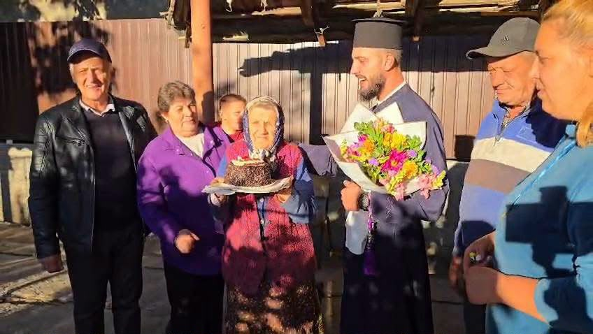
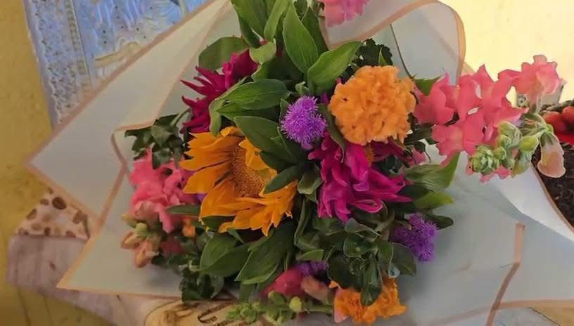

Parohia Izvoru, din comuna Izvoru Bârzii, județul Mehedinți, a fost vineri, 23 octombrie, gazda unui moment deosebit, în cadrul căruia doamna Ioana Popescu a fost sărbătorită cu prilejul împlinirii frumoasei vârste de 91 de ani.
Evenimentul, organizat cu implicarea preotului paroh Ștefan Manole și a Consiliului Parohial, a reprezentat un prilej de bucurie sufletească, de apropiere între oameni și de reafirmare a respectului pe care comunitatea îl poartă persoanelor vârstnice, celor care au traversat aproape un secol de viață, păstrând în suflet amintiri, experiențe și valori transmise din generație în generație.
O viață de 91 de ani, o poveste care merită prețuită
Împlinirea vârstei de 91 de ani reprezintă mai mult decât o aniversare. Este un moment care ne invită să privim cu recunoștință la drumul parcurs de un om, la anii care au trecut, la încercările depășite și la bucuriile care au dat sens vieții.

Pentru doamna Ioana Popescu, această zi aniversară a fost un prilej de a se bucura de atenția și prețuirea celor din jur, într-un cadru în care credința și spiritul comunitar au ocupat un loc important.
La această vârstă venerabilă, fiecare aniversare capătă o semnificație aparte. Cei 91 de ani vorbesc despre o viață îndelungată, despre numeroase schimbări petrecute de-a lungul timpului și despre valoarea experienței pe care generațiile vârstnice o pot împărtăși celor mai tineri.
Astfel de momente ne amintesc că adevărata bogăție a unei comunități nu se măsoară doar prin dezvoltarea materială, ci și prin grija față de oameni, prin respectul acordat celor care au ajuns la o vârstă înaintată și prin capacitatea de a păstra vii legăturile dintre generații.
Implicarea Bisericii, un sprijin pentru comunitate
Prin această inițiativă, preotul paroh Ștefan Manole și membrii Consiliului Parohial au oferit un exemplu de apropiere sufletească și de atenție față de persoanele vârstnice din comunitate.

Biserica ocupă, în viața multor comunități rurale, un loc important nu doar prin slujbele religioase și îndrumarea spirituală, ci și prin rolul său de a-i aduce pe oameni împreună, de a încuraja solidaritatea și de a cultiva respectul față de aproapele.
Sărbătorirea doamnei Ioana Popescu la împlinirea vârstei de 91 de ani se înscrie în spiritul acestor valori, punând în lumină importanța gesturilor simple, dar pline de semnificație. O aniversare marcată prin atenție, căldură și prețuire poate aduce multă bucurie unei persoane vârstnice și poate transmite întregii comunități un mesaj puternic despre omenie și responsabilitate.
Vârsta înaintată nu înseamnă uitare sau izolare, ci respect, demnitate și recunoștință.

Într-o societate în care ritmul vieții este tot mai alert, asemenea inițiative ne reamintesc cât de important este să ne facem timp pentru cei din jur, să le ascultăm poveștile, să le respectăm experiența și să le arătăm că sunt apreciați.
Prezența și implicarea reprezentanților parohiei subliniază tocmai această dimensiune umană a vieții comunitare: aceea în care fiecare persoană contează, iar vârsta înaintată nu înseamnă uitare sau izolare, ci respect, demnitate și recunoștință.
Respectul față de vârstnici, o valoare care trebuie păstrată
Persoanele vârstnice reprezintă o parte importantă a patrimoniului uman și moral al fiecărei comunități. Prin experiența lor de viață, prin amintirile pe care le păstrează și prin valorile pe care le transmit, acestea contribuie la păstrarea identității locale și la consolidarea legăturilor dintre generații.

Aniversarea doamnei Ioana Popescu devine astfel și un prilej de reflecție asupra modului în care societatea își tratează seniorii. Respectul față de cei ajunși la vârste înaintate trebuie să se manifeste nu doar în zilele aniversare, ci în fiecare zi, prin atenție, sprijin, răbdare și disponibilitatea de a le fi alături.
În comunitățile rurale, unde tradițiile, credința și relațiile dintre oameni continuă să aibă o semnificație aparte, astfel de gesturi contribuie la păstrarea unui spirit de solidaritate. Ele arată că legăturile dintre oameni pot rămâne puternice atunci când sunt construite pe respect reciproc și pe dorința sinceră de a aduce bucurie celor din jur.

Totodată, asemenea evenimente pot deveni exemple pentru generațiile tinere, cărora le transmit importanța recunoștinței față de părinți, bunici și față de toți cei care au contribuit, prin viața și munca lor, la dezvoltarea comunității.
Un mesaj de bucurie și binecuvântare
Sărbătorirea doamnei Ioana Popescu la împlinirea vârstei de 91 de ani, în cadrul Parohiei Izvoru din comuna Izvoru Bârzii, rămâne un moment cu o semnificație aparte, în care atenția acordată unei persoane vârstnice s-a transformat într-un mesaj mai larg despre credință, respect și solidaritate.

Implicarea preotului paroh Ștefan Manole și a Consiliului Parohial evidențiază rolul pe care comunitatea bisericească îl poate avea în susținerea relațiilor dintre oameni și în păstrarea valorilor creștine care încurajează iubirea aproapelui, grija față de cei aflați în nevoie și recunoștința pentru fiecare etapă a vieții.
La împlinirea celor 91 de ani, doamnei Ioana Popescu îi transmitem gânduri bune, multă sănătate, pace sufletească și zile senine, alături de cei dragi. Fie ca anii care vor urma să îi aducă liniște, bucurii și binecuvântarea lui Dumnezeu!

La mulți ani, doamnă Ioana Popescu! Fie ca această aniversare să rămână o amintire frumoasă, iar exemplul de respect și apropiere sufletească oferit de comunitatea Parohiei Izvoru să ne amintească tuturor că grija față de cei vârstnici este o datorie morală și o expresie autentică a omeniei.
Un gest de prețuire, o aniversare de suflet și un mesaj pentru întreaga comunitate: oamenii care au adunat aproape un secol de experiență merită să fie înconjurați de respect, căldură și recunoștință.
Pentru mai multe știri din comunitățile mehedințene, urmăriți secțiunea Social de pe MehedintiAzi.ro și pagina de Facebook Mehedinți Azi.
Redactia MehedintiAzi.ro